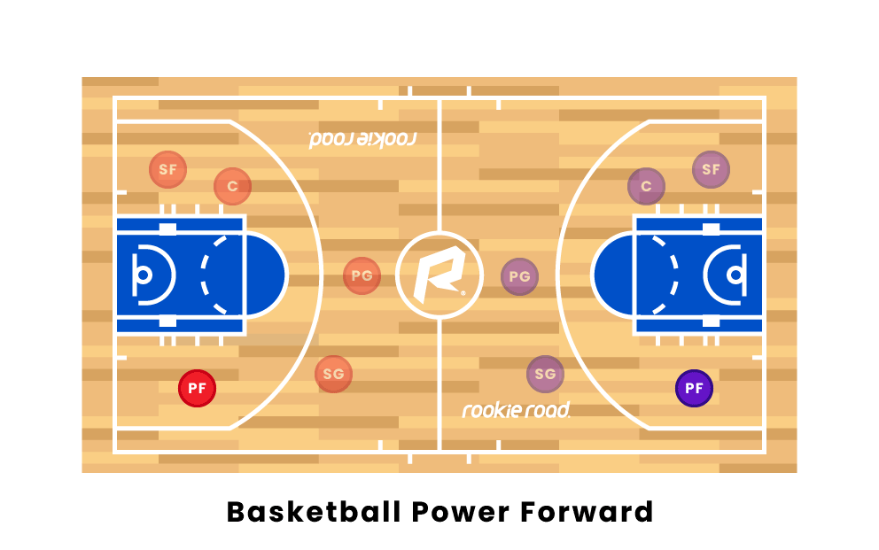
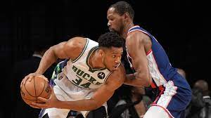

The power forward (PF), also known as the four, often plays a role similar to that of the center, down in the "post" or "low blocks". The power forward is often the team's most powerful and dependable scorer, being able to score close to the basket while also being able to shoot mid-range jump shots from 10 – 15 feet from the basket. Power forwards are also very crafty and have to be versatile on both offense and defense but not as much as a small forward. Power forwards usually have good footwork in the paint and are able to force players into bad shots or blocking shots when guarding the paint.[11] Some power forwards have become known as stretch fours, since extending their shooting range to three-pointers. On defense, they are required to have the strength to guard bigger players close to the basket and to have the athleticism to guard quick players away from the basket. Most power forwards tend to be more versatile than centers since they can be part of plays and are not always in the low block. A tall power forward over 6 feet 8 inches (2.03 m) can be a forward-center, playing PF and C. A smaller power forward, approximately 6 feet 7 inches (2.01 m), can play combo forward, playing SF part-time. In the NBA, power forwards usually range from 6 feet 7 inches (2.01 m) to 7 feet 0 inches (2.13 m).[12]

The power forward is essentially a bigger and stronger version of the small forward but not generally as tall or as long as the center. Generally speaking, the power forward is usually good at rebounding and in some instances, a power forward with a high basketball IQ could also be a great passer, particularly from the high or low post areas via post split action. Giannis Antetokounmpo or Dirk Nowitzki are notable examples of power forwards.[8] Instead of a physical power forward, the stretch four is known primarily for shooting three-pointers and midrange jumpshots instead of post play. The stretch four could also be very useful as a pick and pop screener, especially against the drop coverage defensive technique. For example, if the stretch four pops to the perimeter after setting a screen, then their defender will most likely not have enough time to closeout and contest the potential open jump shot if the defender executes drop coverage.[8] Even if the Power forward cannot shoot, being a screener can also set up a mismatch for them or their teammates to try and score on the other team big man if they switch.[11]
